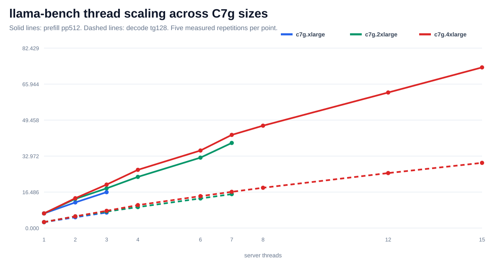
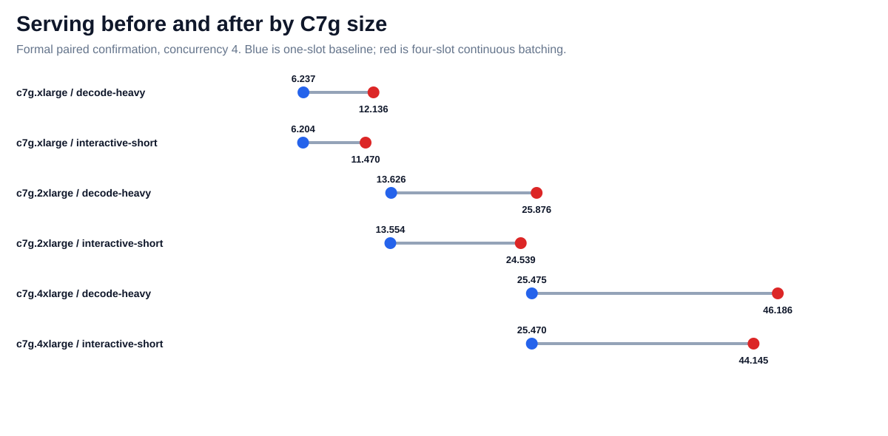
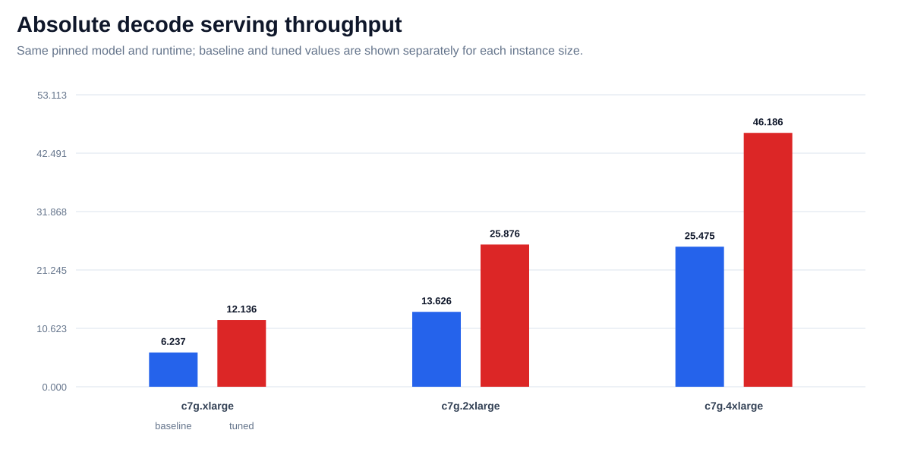
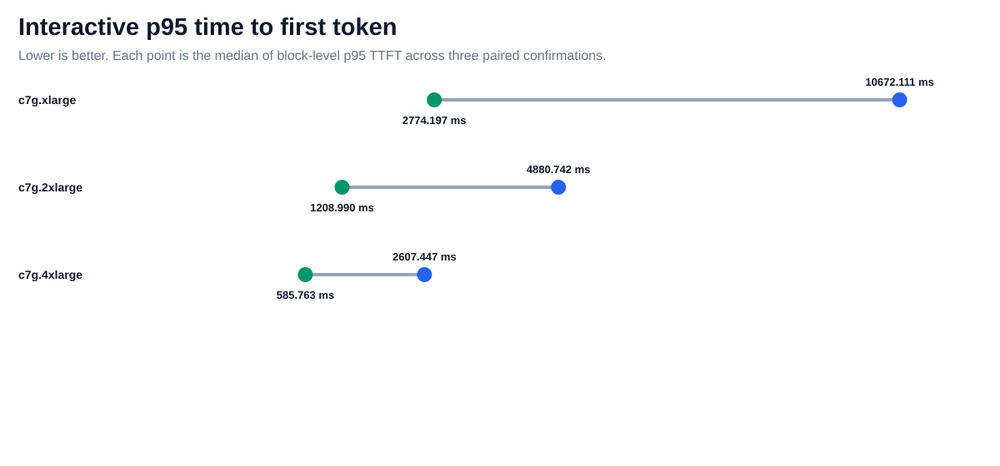
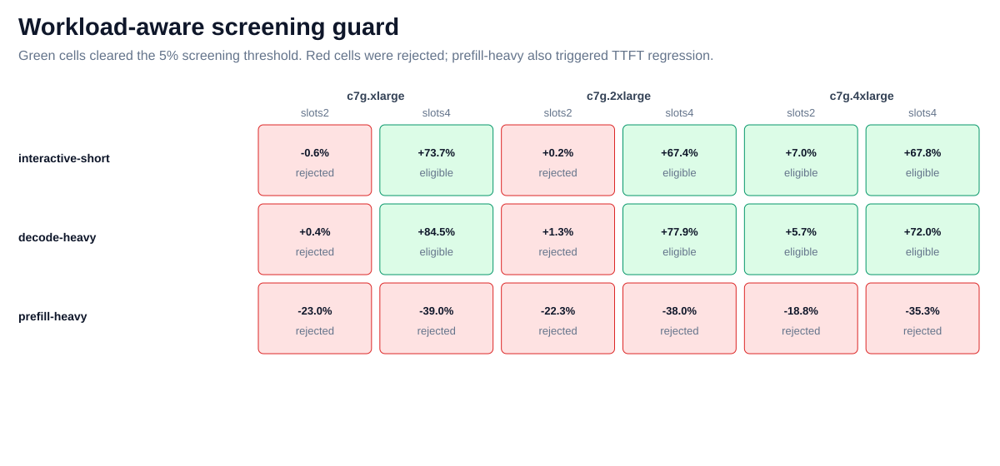
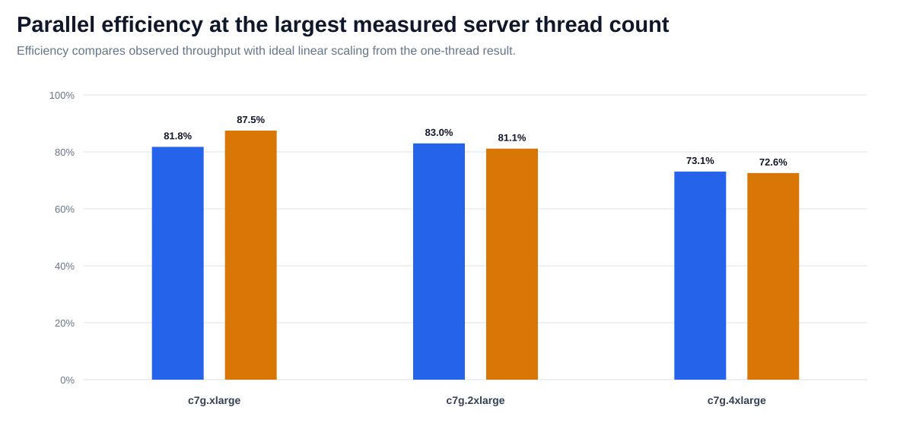

PerfRunbench measured Arm64 evidence
One workload, three C7g sizes, guarded tuning
The same pinned Qwen2.5-7B Q4_K_M model and llama.cpp runtime were measured on C7g.xlarge, C7g.2xlarge, and C7g.4xlarge. A fixed protocol separates hardware scaling from runtime tuning.
3Graviton3 sizes
1047Measured HTTP requests
30Fresh server starts
514Artifacts revalidated
Evidence boundary
Measured results apply only to the tested C7g sizes, pinned model and runtime, reserved loopback client CPU, concurrency-4 workloads, and declared protocols. Hardware-size scaling and runtime-tuning percentages are reported separately and are never added. Prefill-heavy serving regressions were rejected by the guard.
| Instance | vCPU | Memory | Server threads | HTTP requests | Controller digest checks |
|---|---|---|---|---|---|
| c7g.xlarge | 4 | 8 GiB | 3 | 349 | 156 / 0 |
| c7g.2xlarge | 8 | 16 GiB | 7 | 349 | 174 / 0 |
| c7g.4xlarge | 16 | 32 GiB | 15 | 349 | 184 / 0 |
Thread scaling across three C7g sizes

Serving before and after by size

Absolute decode throughput by size

Interactive p95 TTFT before and after

Workload-aware recommendation guard

Parallel efficiency

Formal paired confirmation
| Instance | Workload | Baseline tok/s | Tuned tok/s | Delta | Baseline p95 TTFT ms | Tuned p95 TTFT ms | Guard |
|---|---|---|---|---|---|---|---|
| c7g.xlarge | decode-heavy | 6.237 | 12.136 | 94.585% | 28153.010 | 2554.761 | passed |
| c7g.xlarge | interactive-short | 6.204 | 11.470 | 84.866% | 10672.111 | 2774.197 | passed |
| c7g.2xlarge | decode-heavy | 13.626 | 25.876 | 89.901% | 12879.642 | 1235.923 | passed |
| c7g.2xlarge | interactive-short | 13.554 | 24.539 | 81.040% | 4880.742 | 1208.990 | passed |
| c7g.4xlarge | decode-heavy | 25.475 | 46.186 | 81.296% | 7058.402 | 612.340 | passed |
| c7g.4xlarge | interactive-short | 25.470 | 44.145 | 73.324% | 2607.447 | 585.763 | passed |
Why the guard matters
Prefill-heavy was not recommended. Four-slot serving increased interactive and decode throughput, but prefill-heavy screening regressed on all three sizes and triggered the TTFT guard.
Glossary
- prefill
- Processing input prompt tokens before generation begins.
- decode
- Generating output tokens after prompt processing.
- ttft
- Time to first token, measured from request start to the first streamed token.
- p95
- The value at or below which 95% of observations fall.
- continuous batching
- Scheduling active requests together as token generation progresses.
- noise band
- A minimum change threshold used to avoid recommending measurement noise.
- bootstrap interval
- A resampled uncertainty interval computed from paired measurements.
- parallel efficiency
- Observed throughput divided by ideal linear throughput at the same thread count.
- performance passport
- A versioned evidence record binding results to target, model, runtime, protocol, and guards.